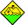

| Biology |
| BH | Avian Flu - Animal Infection | Avianflu sickness, human or animal infection. In case of human infection the classification is "Plague danger", in case of animal infection the classification is "Biological event". |
| BH | Avian Flu - Human infection | Avianflu sickness, human or animal infection. In case of human infection the classification is "Plague danger", in case of animal infection the classification is "Biological event". |
| BH | Biological Hazard | Every biological event, which can cause mass sickness. Animal attack and damage caused by animals are also signed in this category. The category contains further every biological event which related to biodiversity. |
| BH | Biological Hazard - Insection | Any of various short-horned grasshoppers that sometimes migrate in immense swarms, devouring vegetation and crops. |
| EP | Epidemic | In epidemiology, an epidemic epi- meaning "upon or above" and demic- meaning "people", occurs when new cases of a certain disease, in a given human population, and during a given period, substantially exceed what is "expected," based on recent experience (the number of new cases in the population during a specified period of time is called the "incidence rate"). In recent usages, the disease is not required to be communicable; examples include cancer or heart disease. Another example includes the infamous Black Plague of the Middle Ages. |
| EH | Epidemic Hazard | Low number infection but potentionally can cause big plague or mass sickness. |
| HA | Harmful Algal Blooms | A harmful algal bloom (HAB) is an algal bloom that causes negative impacts to other organisms via production of natural toxins, mechanical damage to other organisms, or by other means. HABs are often associated with large-scale marine mortality events and have been associated with various types of shellfish poisonings. |
| BH | Insect Infestations | Locust and other beetle invasion. |
| BH | Jellyfish Invasion | Massive jellyfish invasion |
| BH | Shark Atack | Fatal or non-fatal shark attack |
| Civilization |
| VW | Terror Attack | Terror attack against the citizenry irrespectively of the caused damage and the number of injured persons. |
| Complex |
| CE | Complex Emergency | The official definition of a complex emergency is "a humanitarian crisis in a country, region or society where there is total or considerable breakdown of authority resulting from internal or external conflict and which requires an international response that goes beyond the mandate or capacity of any single agency and/ or the ongoing United Nations country program." |
| Environmental |
| FF | Flash Flood | The flash flood is a rapid flooding of geomorphic low-lying areas - washes, rivers, dry lakes and basins. It may be caused by heavy rain associated with a storm, hurricane, or tropical storm or meltwater from ice or snow flowing over icesheets or snowfields. Flash floods can also occur after the collapse of an ice dam, debris dam or a human structure, such as a dam, for example, the Johnstown Flood of 1889. Flash floods are distinguished from a regular flood by a timescale less than six hours. The temporary availability of water is often utilised by plants with rapid germination and short growth cycle, and by specially adapted animal life. |
| FL | Flood | Formated inland inundation and flood or danger of inland inundation and flood, which expand to big area. |
| Geology |
| M3' border='0'/> | EQ | Earthquake > M3 | Earthquake, which strength is between 3.0 and 3.9 according to the Richter scale. |
| M4' border='0'/> | EQ | Earthquake > M4 | Earthquake, which strength is between 4.0 and 4.9 according to the Richter scale. |
| M5' border='0'/> | EQ | Earthquake > M5 | Earthquake, which strength is between 5.0 and 5.9 according to the Richter scale. |
| M6' border='0'/> | EQ | Earthquake > M6 | Earthquake, which strength is between 6.0 and 6.9 according to the Richter scale. |
| M7' border='0'/> | EQ | Earthquake > M7 | Earthquake, which strength is above 6.9 according to the Richter scale. |
| LS | Land / Mud / rock slide | Land / sand / rock falling which caused significant property and/or personal injury. |
| TS | Tsunami | Tsunami or big wave formation, irrespectively of the caused damage. |
| UGE | Unusual geological event | Not categorized geological event. |
| VA | Vulcano Activity | Every volcano activity, which could indicate eruption before stage. |
| VE | Vulcano Eruption | Every volcano activity irrespectively of property damage as well as the number of injured persons. |
| Meteorology |
| AV | Avalanche | Snow avalanche, which caused poperty damage and/or personal injury.The number of injured persons is above 5 . |
| BLZ | Blizzard | Blizzards are dangerous winter storms that are a combination of blowing snow and wind resulting in very low visibilities. While heavy snowfalls and severe cold often accompany blizzards, they are not required. Sometimes strong winds pick up snow that has already fallen, creating a ground blizzard. |
| CC | Climate change | Every event, which caused by climate change irrespectively of property damage. |
| CW | Cold Wave | Temperature at or under -15 C° / 5 F which lasts more than 3 days.(Measured at zero altitude and 2m height.) |
| CO | Cosmic Event / Impact | An impact event is the collision of a large meteorite, asteroid, comet, or other celestial object with the Earth or another planet. Throughout recorded history, hundreds of minor impact events (and exploding bolides) have been reported, with some occurrences causing deaths, injuries, property damage or other significant localised consequences. This event included the serious incident in the outer space. |
| DR | Drought | A drought (or drouth [archaic]) is an extended period of months or years when a region notes a deficiency in its water supply. Generally, this occurs when a region receives consistently below average precipitation. It can have a substantial impact on the ecosystem and agriculture of the affected region. Although droughts can persist for several years, even a short, intense drought can cause significant damage and harm the local economy. This global phenomenon has a widespread impact on agriculture. The United Nations estimates that an area of fertile soil the size of Ukraine is lost every year because of drought, deforestation, and climate instability. Lengthy periods of drought have long been a key trigger for mass migration and played a key role in a number of ongoing migrations and other humanitarian crises in the Horn of Africa and the Sahel. |
| GW | Giant Wave Impact | Rogue waves (also known as freak waves, monster waves, killer waves, extreme waves, and abnormal waves) are relatively large and spontaneous ocean surface waves that are a threat even to large ships and ocean liners. In oceanography, they are more precisely defined as waves whose height is more than twice the significant wave height (SWH), which is itself defined as the mean of the largest third of waves in a wave record. Therefore rogue waves are not necessarily the biggest waves found at sea; they are, rather, surprisingly large waves for a given sea state. "Rogue waves are not tsunamis, which are set in motion by earthquakes [and] travel at high speed, building up as they approach the shore. Rogue waves seem to occur in deep water or where a number of physical factors such as strong winds and fast currents converge. This may have a focusing effect, which can cause a number of waves to join together." |
| HS | Hailstorm | A hailstorm is a meteorological event, being a storm in which a large amount of hail falls, which caused significant property and/or personal injury. |
| HT | Heat Wave | Temperature at or above 35 C° / 95 F which lasts more than 3 days.(Measured at zero altitude and 2m height.) |
|  | IFL | Inland Inundation | Inland inundation formated on big area, irrespectively of of caused damage. |
| ST | Severe Weather | Every extreme meteorological event, which caused property damage and/or personal injuries. |
| SS | Snow Storm | Heavy snowstorm or snowstorm with big extent, which cause significant property damage. |
| SE | Storm Surge | A rise of the sea, preceding a storm (usually a hurricane) due to the winds of the storm and low atmospheric pressure. |
| EC | Thunderstorm / Orkan | Heavy storm, the speed of the wind is above 77 km/h accordinf to the Benfort scale. [21 m/s]-[47 mph]. The display is irrespectively of damage and the number of injured persons. |
| TO | Tornado F0-F1 | Tornado, which is F0-F1 classification according to the Fujita scale. |
| TO | Tornado F2-F5 | Tornado, which is F2-F5 classification according to the Fujita scale. |
| TC | Tropical Depression | Tropical storm, which hit the "Tropical Depression" stage according to the Saffir-Simpson scale. |
| TC | Tropical Storm | Tropical storm, which hit the "Tropical Storm" stage according to the Saffir-Simpson scale. |
| TC | Tropical Storm S1 | Tropical storm, which hit the I stage according to the Saffir-Simpson scale. |
| TC | Tropical Storm S2 | Tropical storm, which hit the II stage according to the Saffir-Simpson scale. |
| TC | Tropical Storm S3 | Tropical storm, which hit the III stage according to the Saffir-Simpson scale. |
| TC | Tropical Storm S4 | Tropical storm, which hit the IV stage according to the Saffir-Simpson scale. |
| TC | Tropical Storm S5 | Tropical storm, which hit the V stage according to the Saffir-Simpson scale. |
| Non-categorized |
| UEV | Non-categorized event | This category includes events where events are unknown. This category type will be change, if when arrived additional information. |
| Other |
| MG | Migration Crisis | Migration events, creating a crisis situation in the affected area. |
| Security |
| SPS | Serious public security incident | The public safety issues a municipality, county, state, or federal jurisdiction might grapple with include narcotic use, trespassing, burglary, harassment, juvenile delinquency, unauthorized living, noise, littering, inappropriate social behavior, inebriation, and other quality of life issues. |
| Technology |
| CR | CBRN | CBRN is an acronym for Chemical, Biological, Radiological, and Nuclear. It is in common use worldwide, to refer to incidents or weapons in which any of these four hazards have presented themselves. CBRN Defense (CBRND) is the acronym that is used in reference to CBRN passive protection, contamination avoidance and CBRN mitigation. CBRNE is the acronym for Chemical, Biological, Radiological, Nuclear, and high-yield Explosives. A CBRN incident differs from a HAZMAT incident in both effect scope (i.e. CBRNE can be a mass casualty situation) and in intent. CBRN incidents are responded to under the assumption that they are deliberate, malicious acts with the intention to kill, sicken and/or disrupt society. Evidence preservation and perpetrator apprehension are of greater concern with CBRN incidents than with HAZMAT incidents. |
| CA | Chemical Accident | Chemical accident or incident which caused significant property and/or personal injury |
| CID | Critical Infrastructure Disruption | Disruptions of critical infrastructure could result in catastrophic loss of life, adverse economic effects and significant harm to public confidence. This category included: power, water, transportation, medical, food and communication sturcture's disruptions. |
| ED | Environment Pollution | The presence of offensive, but not necessarily infectious, matter in the environment. For example, pollution may be by specific organic or inorganic chemicals, by physical agents such as dust, volcanic fallout, smoke, automobile fumes, radioactive material and animal feces and urine. |
| EX | Explosion | Any technical event amount to explosion. |
| FR | Fire | Fire events, which extend to big area. Display happens if the property damage is significant and/or somebody dies from a wound, and the number of injured persons is above 3. |
| WF | Forest Fire | Forrest or scrub fire which has big extent irrespectively of damage and the number of injured persons. It serves to sign occurrent fire storm. |
| HZ | HAZMAT | A dangerous good is any solid, liquid, or gas that can harm people, other living organisms, property, or the environment. They are often subject to chemical regulations. An equivalent term, used almost exclusively in the United States, is hazardous material (hazmat or HAZMAT). Dangerous goods may be radioactive, flammable, explosive, toxic, corrosive, biohazardous, an oxidizer, an asphyxiant, a pathogen, an allergen, or may have other characteristics that render it hazardous in specific circumstances. Mitigating the risks associated with hazardous materials may require the application of safety precautions during their transport, use, storage and disposal. Most countries regulate hazardous materials by law, and they are subject to several international treaties as well. |
| NC | Nuclear Event | Related to nuclear power plant, processing plant, mine irrespectively of the INES scale classification. |
| PW | Power Outage | Every event which related to power failure and affects big area and/or lot of people.[Note:the icon is used at extreme weather event if lightning causes damage] |
| AC | Technological Disaster | Every technical disaster, which cause significant damages and/or personal injuries. The number of the injured persons are above 10. |
| VI | Vehicle Accident - Airplane | Aircraft accident. The display is irrespectively of the number of injured persons and damage. |
| VI | Vehicle Accident - Car,truck,etc | Vehicel accident underground, aboveground and on road. Every event when at least 5 persons affected in the accident. |
| VI | Vehicle Accident - Ship | Watercraft or submarine accident. The display is irrespectively of the number of injured persons and damage. |
| VI | Vehicle Accident - Train | Vehicel accident which transport on determined line. The display is irrespectively of the number of injured persons and damage. |
| VIV | Vehicle Incident - Airplane | Air (space) transport event that caused a major emergency. |
| VIV | Vehicle Incident - Car, truck,etc. | Vehicle incident underground, aboveground and on road. |
| VIV | Vehicle Incident - Ship | Watercraft or submarine incident. |
| VIV | Vehicle Incident - Train | Vehicel incident which transport on determined line. |